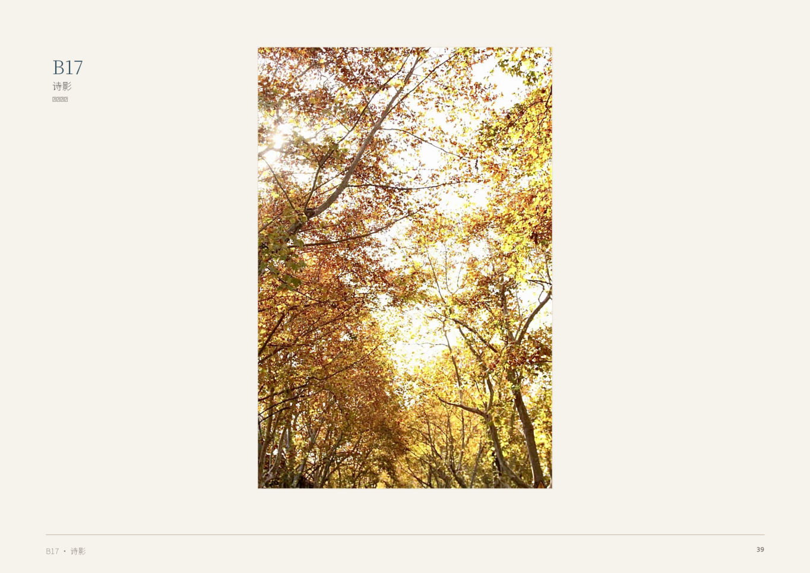

About

Youcy Huang
黄鈺茜
I am an artist, writer, and researcher based in China. I hold a Bachelor of Fine Arts and a Master of Fine Arts from the China Academy of Art (CAA), where my thesis examined body, trace, and presence in the paintings of Robert Ryman.
My work moves across painting, photography, fiction, poetry, art theory, and public installation. At the center of this practice is a sustained inquiry into how meaning emerges — or fails to emerge — under contemporary conditions. I am the author of the Guaren (瓜人) project, a multi-year theoretical framework that diagnoses the structural conditions of art’s contemporary aphasia and proposes alternative mechanisms for making meaning actionable: channel-type art practice, the ganxing (感兴) method rooted in the irreversible material logic of Chinese ink painting, and a spatial ethics drawing on New Confucian thought.
I am currently learning German and preparing to apply for a Master’s in Digital Humanities at TU Dresden — seeking to extend my practice into computational methods, digital cultural heritage, and the design of cultural-technical systems that retain space for what cannot be formatted.
My fiction and poetry explore family, memory, generational silence, and the weight of what is passed down without being spoken. These are not separate from my theoretical work — they are the same inquiry, conducted in a different medium.
Education
2023–2026
Master of Fine Arts (MFA), Painting — China Academy of Art (CAA), Hangzhou
Thesis: From Robert Ryman: Body, Trace, and Presence in Painting
2019–2023
Bachelor of Fine Arts (BFA), Painting — China Academy of Art (CAA), Hangzhou
Thesis: Zao Wou-Ki and the Synthesis of Chinese and Western Painting Traditions
Selected Writing
“The Aphasia of Contemporary Art” — Guaren Project, 2024–2025
“Water-based Materials, Temporal Structure, and Ganxing” — Art Theory, 2025
“From Field to Self-Cultivation: New Confucian Ethics’ Spatial Generative Path” — Spatial Ethics, 2025
“Witness and Transformation: The Ethics of Authenticity in Sebastião Salgado’s Photography” — CAA, 2024
Family Banquet (家宴) — Novel, 2025–2026
The Last Letter to Mother (给母亲的最后一封信) — Novella, 16,095 words
Selected Projects
Flowing Mountain · Wave Traces — Qingdao Public Art Installation Proposal
Body as Brush, Mountain-Sea as Ink — Stuttgart Installation Concept
Truck Seal Project — Community Art Initiative
Anonymous Art Company — Collective-presenting Creative Agency Framework
Qingming, Received & Blue Stops — AI-Assisted Short Film Scripts